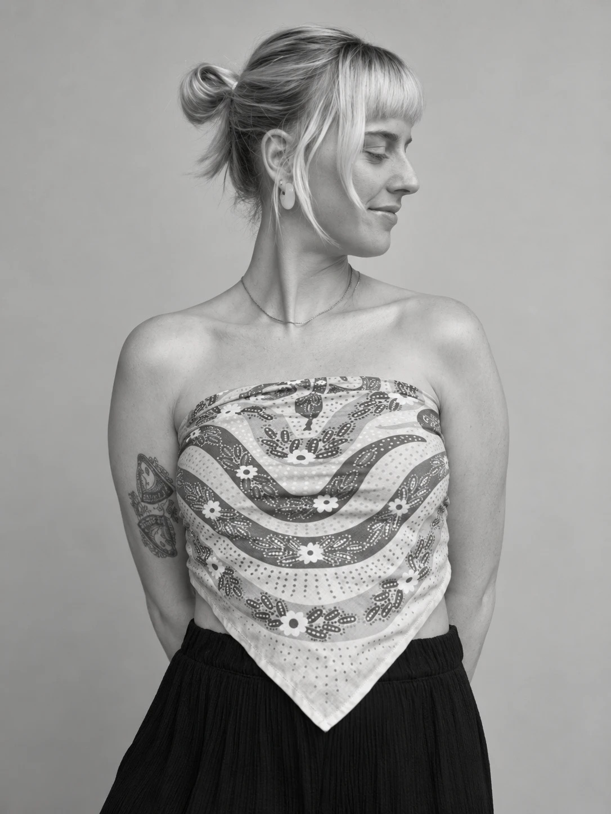

Chelsea's work explores transformation, playfulness, and the quiet power of reclamation. She uses materials such as grout, mosaic, paint, and found objects, and is drawn to the tension between softness and chaos. Broken fragments of fine china and discarded frames are reassembled into forms that feel both protective and exposed.
A recurring focus on feminine energy, cycles, and inner worlds emerges intuitively rather than literally. She is interested in what lies beneath our collective — within rough, imperfect exteriors exist emotion, desire, and the unseen labor of healing.
Chelsea aims to create work that feels both grounded and otherworldly, inviting viewers into a space of reflection, repair, play, and quiet transformation.